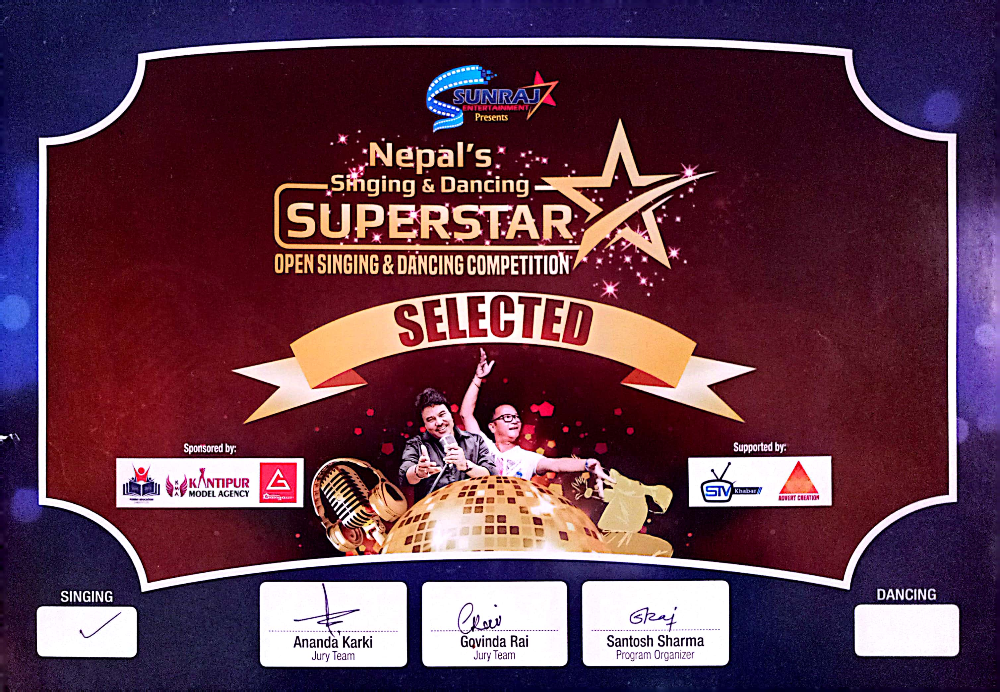
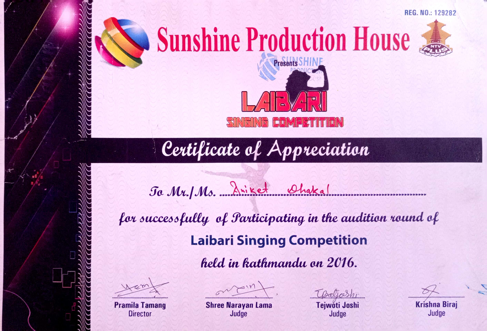
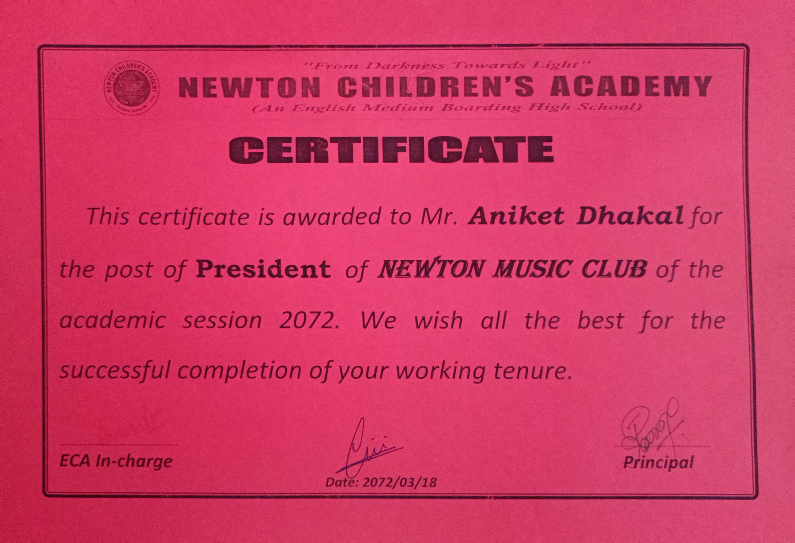
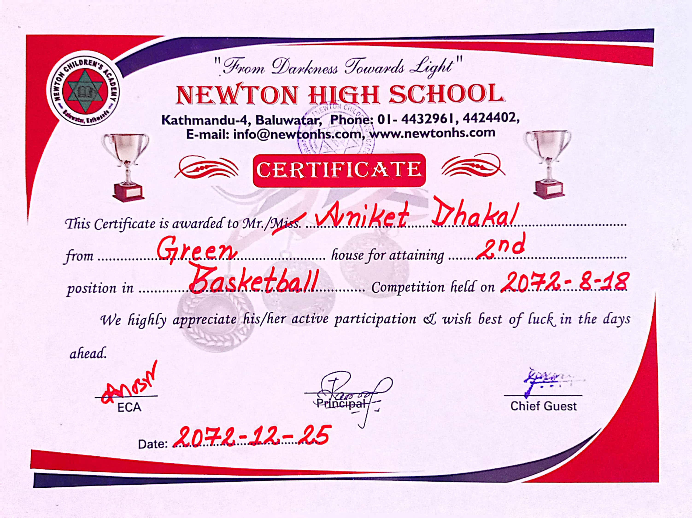
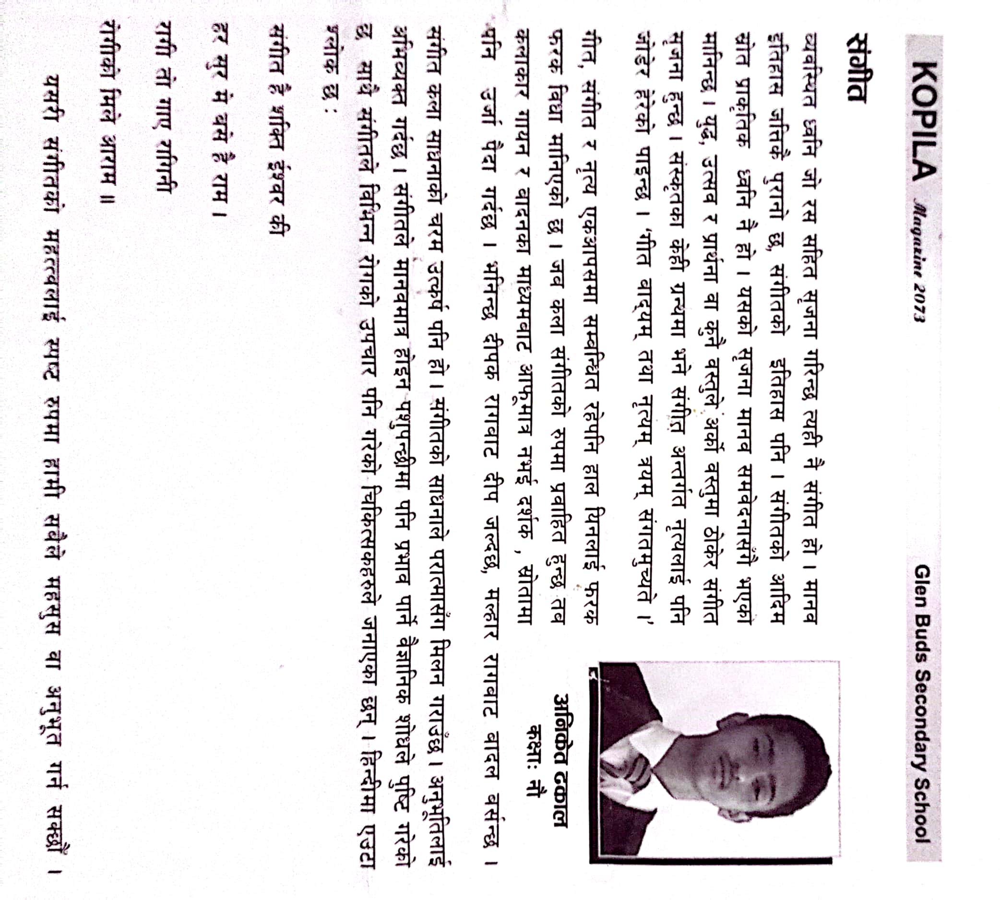

This Certificate was provided by MR.Santosh the organizer of the show.
This was provided by Nepal Telivision for the participation of Sunshine program.
I was on grade 8 when I got the post of President of Music club to handel everything related to music.
I got this certificate because my of nice game play and team effort.
Article that I published in grade 9 with the help of my music teacher.
